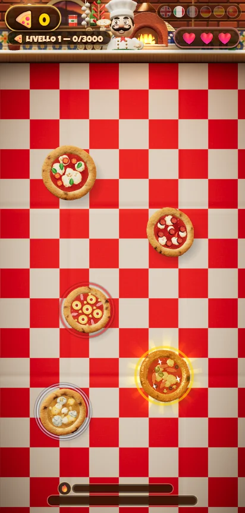
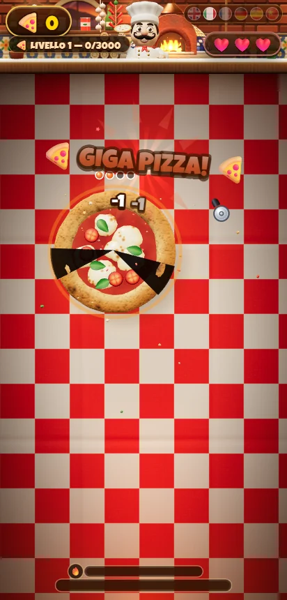

Quattro mondi golosi
Pizzeria in Italia, pasticceria in Austria, panificio in Francia e il Natale, con la renna che sfreccia inseguita da Babbo Natale.
 Intrecci di Carta
Intrecci di Carta

Affetta pizze, torte e pane in 3D! 4 mondi, 100 livelli, tagli veri, maxi boss!


Pizza Blade è arcade puro, e ora è tutto in 3D: i cibi volano in alto e tu hai una sola missione, tagliarli al volo con una ditata decisa. Un colpo netto, la pizza si apre, punti. Ma sbaglia bersaglio e perdi una vita.
Sembra facile. Poi il ritmo accelera, e un mappamondo 3D ti porta in viaggio attraverso quattro mondi, uno più goloso dell'altro.
Pizzeria in Italia, pasticceria in Austria, panificio in Francia e il Natale, con la renna che sfreccia inseguita da Babbo Natale.
Ogni cibo buono vuole tre colpi: spicchi sulle pizze e sulle torte, fette sul pane. Due colpi paralleli non bastano.
Prima la velocità, poi i cibi corazzati, fino ai boss che attraversano lo schermo. Pizza Fever, pizze d'oro e 5 lame da sbloccare.
Taglia solo i cibi buoni. Bordo rosso? Giù le mani: pizza all'ananas, pane ammuffito, il topo. Bordo verde? Bonus, affettalo!
Un problema, un acquisto da ripristinare o un'idea per un gioco? Scrivici: rispondiamo in italiano e in inglese.
ScriviciQuali dati usa il gioco, perché e come puoi gestire il consenso agli annunci.
Leggi l'informativa